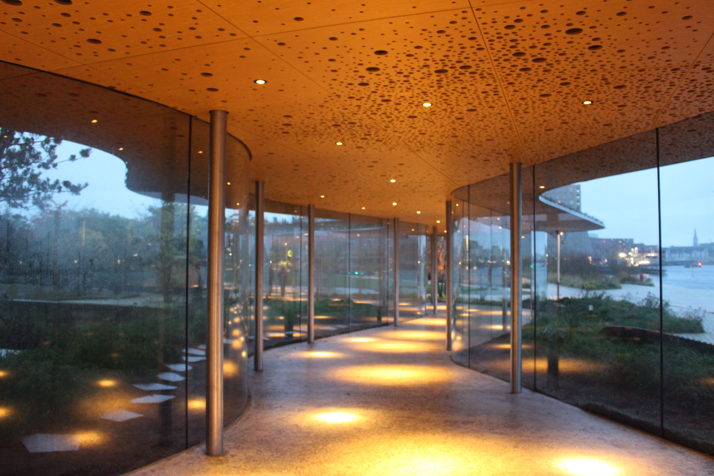
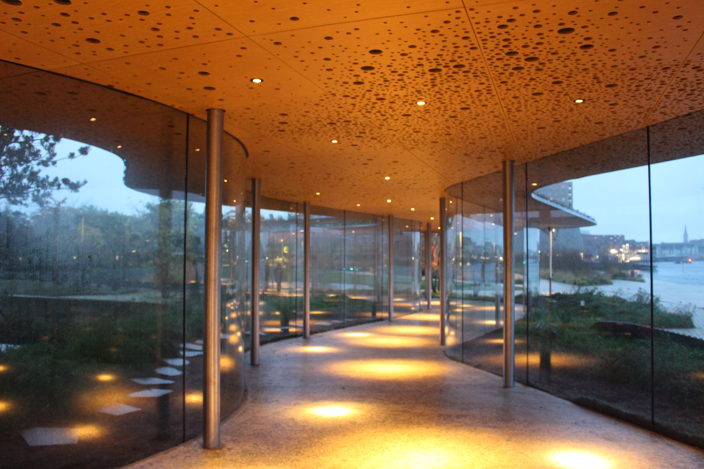

Mardi 21 octobre
Sur mon trajet pour Copenhague, j’avais une correspondance de 1h à Hambourg. Correspondance
pendant laquelle j’ai quand même réussi à louper mon deuxième train. Je suis descendue du
premier train sur la même plateforme où je devais prendre le deuxième, donc je n'ai pas
bougé. Sauf que le quai était très long, et le deuxième train est arrivé et parti sans
que je le vois. J'étais sur la bonne voie, mais beaucoup trop loin.
J'ai pu prendre un autre train 2 h après, donc tout va bien. Mais la honte quand même.
En sortant de la gare à Copenhague, je me suis directement retrouvée en face du parc
Tivoli, un des plus anciens parcs d’attractions du monde, décoré pour Halloween.
L'auberge de jeunesse où j’allais rester 5 jours est cool, mais les chambres sont plutôt
petites. Ils proposent plein de trucs, mais il faut souvent payer en plus, l'accès à la
cuisine par exemple. Et les lits du bas ont leur ouverture face à face, donc un peu gênant
parce qu'on voit carrément la personne en face.

Mercredi 22 octobre
Première journée à Copenhague !! J'ai adoré.
J'ai commencé par un tour guidé gratuit intitulé “politiquement incorrect”,
qui démarrait de mon auberge de jeunesse et qui durait de 11 h à 13 h.
Le guide était très intéressant et amusant. On a fait un bon tour
de la ville, et on a notamment assisté à la relève de la garde. On a
eu de la chance car les gardes jouaient de la musique ce jour-là, car
le roi revenait de son palais d’été.
Pendant le tour, j’ai rencontré une dame américaine d’une soixantaine
d’années, qui (volontairement) n’avait pas de téléphone. Je lui ai proposé
de la guider pour rentrer à l’auberge.
Elle a accepté, et avant de rentrer, on est allées voir la (petite)
statue de la petite sirène, et on s’est baladées. On est entrées
dans une friperie, et on est allées voir l’intérieur de “l’église
de marbre”. On était super copines à la fin.
Ensuite, j’ai rejoint Pierre, un ami de prépa qui fait ses études à Copenhague. On est allés visiter le Musée Thorvaldsen, car c’était gratuit le mercredi. C’était un musée de sculptures, la plupart classiques, du sculpteur Bertel Thorvaldsen justement, et quelques-unes modernes.

Je n’avais pas mangé donc on est allés dans un ramen, où j’ai mangé un super poulet teriyaki. Puis on est allés au DAC, le musée d’architecture du Danemark, mais il était fermé. On est allés manger le repas du soir dans le bar/resto le moins cher qu’on ait trouvé, c'est à dire qu'on a payé un smic pour une frite un burger et des onions rings.
Jeudi 23 octobre
Vendredi 24 octobre
J’ai passé la matinée à l'hôtel, à planifier la suite de mon trajet. J’ai fait des courses, puis j’ai rejoint Pierre à 16 h au musée d’architecture, cette fois ouvert. Le musée était super intéressant, et il y avait une exposition sur la cohabitation entre architecture humaine et la nature, mais on n’a pas eu le temps de tout lire comme ça fermait à 18 h. En revanche, nous avons eu le temps de descendre par le toboggan, qui est très sensationnel. On est retournés au ramen, le seul restaurant avec des prix cohérents de la ville apparemment.
Samedi 25 octobre
On est allés visiter le château de Christiansborg, avec Pierre. On n’a pas vu la partie Parlement, mais on pouvait visiter les salles de réception, les cuisines, les écuries, et les ruines des anciens châteaux (puisque les batiments ont la mauvaise habitude de brûler dans cette ville). Il fallait mettre des sur-chaussures pour l’intérieur du palais. Il y avait des vrais chevaux dans les écuries, mais des faux légumes dans les cuisines. Les salles de réception sont encore utilisées pour accueillir jusqu'à 400 personnes, j'ai très hâte d'être invitée à l'anniversaire du roi pour en faire partie.

Ensuite, on a voulu aller à Christiania. Sur le chemin on est
passés par Nyhavn, un ancien port commerçant aux maisons colorées
inspirées d’Amsterdam. On a vu l’opéra, devant lequel on peut
être déposé par un bus-bateau, un moyen de transport comme
un autre apparemment.
On s’est promenés un peu dans Christiania, une
communauté hippie/quartier libre avec un statut un peu
particulier. C’est maintenant plus encadré par l’administration,
donc ça a apparemment pas mal changé depuis quelques années.
En tous cas, c’est assez joli et étonnant, l’art est exprimé
un peu partout et de toutes les façons dans le quartier.
On est allés manger dans un resto italien qui avait des prix
très attractifs notés sur une pancarte. En ouvrant le menu, on
a découvert d’autres prix, ce n’était plus du tout aussi intéressant
soudainement. Du coup, on s’est enfuis avant que le serveur ne
revienne. On a mangé les restes du pique-nique de midi dans la
cuisine de mon hôtel, très dignement.
 
